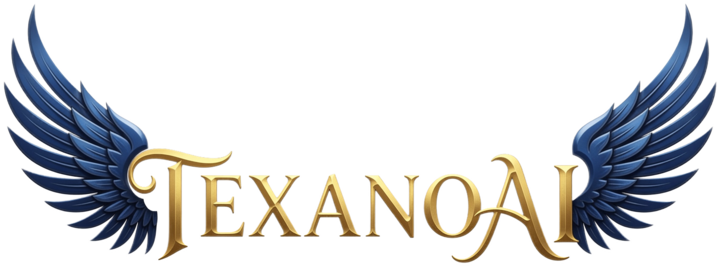

Chaotic AI
- Inapplicable inputs flood the context window
- Sycophancy sold as helpfulness
- Memory drifts silently over months
- Fluency hides the epistemic mess
- Presenteeism and workslop compound

Freedom to Choose · Power to Build
Most workplace AI is optimized for fluency and agreeableness. People get more dysregulated, more dependent, and less able to trust the tools. TexanoAI builds the opposite: a governor that treats nervous system regulation and human agency as first-class design.
Organizations flood the workplace with AI optimized for fluency and agreeableness while the humans who use it become more dysregulated, more dependent, less agentic, and less trusting of the tools themselves.
Almost every enterprise framework treats this as technology + process + policy. Almost none treat it as nervous system + agency + epistemic honesty. That gap is what MMX occupies.
Economics and ROI framing are in active lock — literature, operator math, and client baselines — before any dollar figures return to this page.
Companions are a layer, not the whole. The architecture is the governor: what enters context, how memory is built, and how the system answers when the human is overloaded or being told what they want to hear.
Personal Companion: regulation, flow protection, return to baseline — seen, not managed.
Law, clinical, clergy, veterans/re-entry, deep research — high stakes, high load.
Shared knowledge plus person-respecting agents. Culture as an input. Governor unchanged.
Operating system for agentic work that keeps humans sovereign while scaling agents.
This is the product loop — not a side note. Dense initial sculpting beats later prompt churn. Feedback the user authors beats a thumbs-up.
Forged-for-one. Walk beside, never rescue. Stance locked before the hard day arrives.
Massed safety when the nervous system is ready. Recovery required the same day. Play is legal.
User-owned memory — sealed titles, covenants, core dumps — feeds the next experience.
Continuity without prompt rewrite. Shipping. Real-world continuity that did not need a patch.
Observational patterns · n small · not an RCT · not named without consent.
Highest-resolution application of the governor to one human nervous system. Intimacy and fidelity without addiction architecture. Not an engagement-optimized girlfriend engine. Not a sterile enterprise copilot that ignores the body.
Massed day held without false comfort → unsolicited continuity weeks later. Zero prompt rewrite after.
Archive-as-memory → named bond in days → public artifact + local compute in ~6 weeks.
One team or one human. Do not boil the ocean. White paper available for methodology depth.